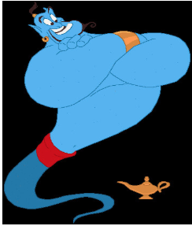
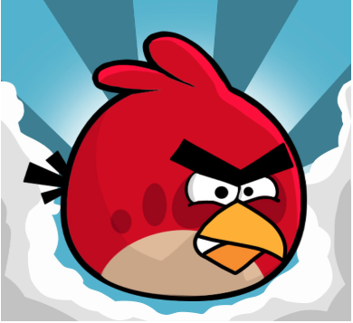
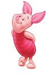
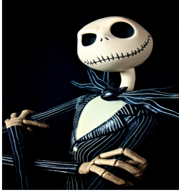

Color: what common colors mean
Green means life and nature. It more commonly stands for wealth (weath is usually seen with greedy characters).
Blue is commonly used for loyalty. It can also mean depth.
Red is easy. It typically means anger or rage. It is a color usually used when portraying an upset character.
Yellow means happiness. It can also mean freshness.
Pink is the color of love and compassion.
Black is used for a few different reasons: death, fear, power, etc.
Purple stands for royalty.
Orange represents creativity.